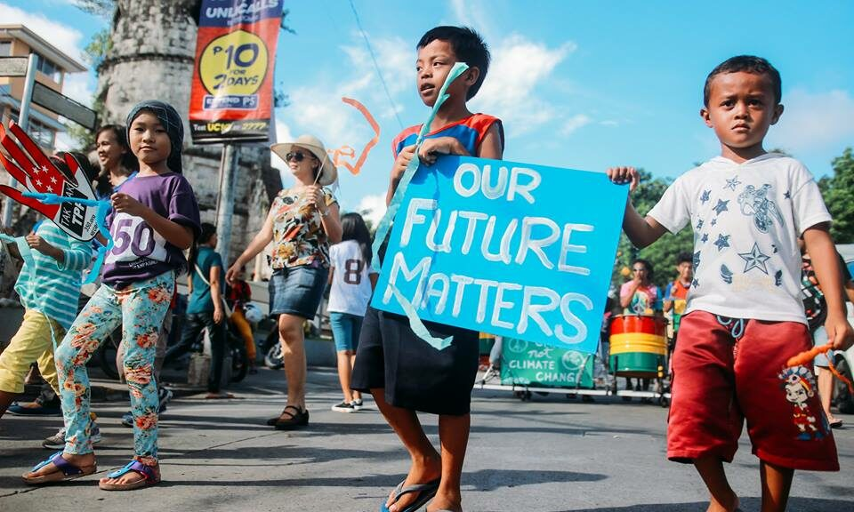

Hello!
Thank you for taking the time to answer this short survey.
This questionnaire aims to gather opinions regarding several important issues currently affecting the Philippines.
Your honest answers are greatly appreciated.
1. Which issue should the government prioritize the most?
2. Do you believe quality education should be accessible to everyone?
3. Which environmental issue concerns you the most?
4. How satisfied are you with public transportation?
5. Which sector deserves a larger national budget?
6. Do you think corruption remains a major issue?
7. Which renewable energy source should the Philippines invest in more?
8. Which social media platform do you use most for news?
9. Should more programs be created for youth employment?
10. Overall, are you optimistic about the future of the Philippines?
One last click...